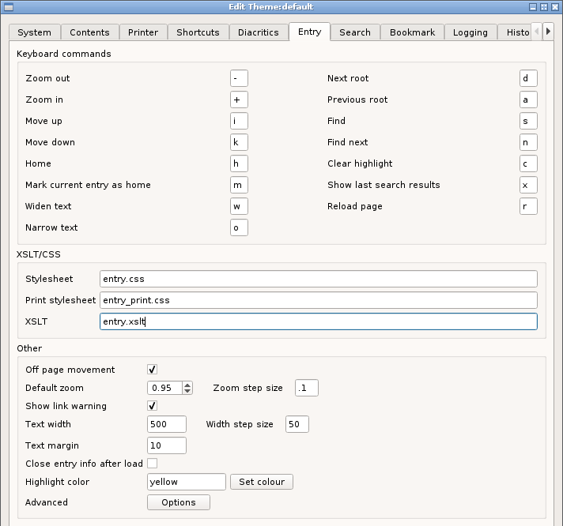
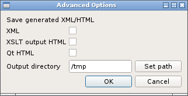

Keyboard commands
the keyboard commands are only effective, when an entry has keyboard focus. To give keyboard focus either click the entry or use the shortcut Ctrl+M,E (see here.
Mark and Home
Use the mark command on an entry to set is as the home entry and use the home key to return to it later. This is only effective when the home entry is in the current tab. It is saved between sessions.
Clear and show
Local search results are highlighted by changed the background color. Clear will hide the highlighting and show will reveal it.
XSLT/CSS
These three entries specify the stylesheets used to control the appearance of the lexicon entries. The names should not contain path information as they are located within a predefined directory structure. (See here.)
Other
Off page movement
When using the keyboard movement commands, this option controls what happens when the command moves passed the first or last entries on the current page. When set, the next or previous root is loaded.
Zoom
The zoom setting for new tabs. Changing this does not change the scaling of the current tabs. (This can be done using Menu -> View -> Set zoom.)
Show link warning
When repairing links, as described here, setting this option off will prevent the warning dialog from showing.
Text width
This is the default text width for all entries. Changing this does not change the text width of current tabs. (This can be done using Menu -> View ->Set text width.)
Text margin
This sets the vertical spacing, in pixels, between successive entries within a page.
Close entry info
When viewing an individual entry from the search results or elsewhere, setting the options will cause the entry to automatically close after loading the entry. (An example is shown here.)
Highlight color
Click the button to choose the local search highlight color.
Advanced
These are all options to control outputting additional information useful for problem solving.
